GLICD
Connecter le smartphone au PC pour récupérer les photos :
Debian et
Xfce
Dans cet exemple, Android est le système d'exploitation du
smartphone.
les photos seront récupérées à l'aide du gestionnaire de fichiers Thunar.
Le protocole MTP (Media Transfer Protocol) sera utilisé pour le transfert de fichiers entre le smartphone et le PC.
Les paquets ci-dessous et leurs dépendances doivent être installés :
- jmtpfs : Permet le transfert de fichiers en utilisant le protocole MTP (Media Transfer Protocol) Paquet/jmtpfs
- gvfs (installé par défaut) Paquet/gvfs
- gvfs-backends
- gvfs-common (installé par défaut)
- gvfs-daemons (installé par défaut)
- gvfs-fuse Paquet/gvfs-fuse
- gvfs-libs (installé par défaut)
Pour l'installation des paquets se reporter au chapitre :
Ajout d'une application ou de paquets
Après l'installation des paquets il est important d'éteindre puis de redémarrer le PC.
- Après avoir installé les paquets et redémarré le PC, rester sur le bureau
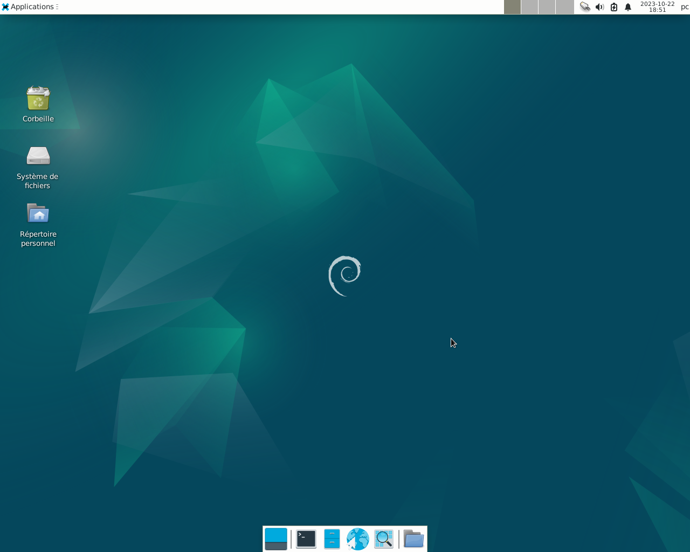
- Déverrouiller le smartphone à l'aide de votre mot de passe. Attention, si le smartphone est
verrouillé la connexion ne se fera pas.
Connecter le smartphone au PC à l'aide d'un câble USB, le smartphone apparaît sur le bureau.
Dans cet exemple, le smartphone apparaît sur le bureau sous le nom : MEMOsmart
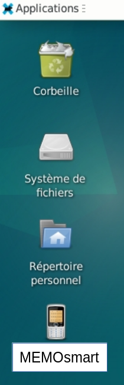
- Vérifier sur le smartphone sa bonne configuration dans :
Paramètres > Appareils connectés > Préférences USB ou USB > Transfert de fichiers
Ou pour certains : Partage de connexion > USB > Périphérique multimédia MTP
Ou pour d'autres, quelque-chose d'approchant.
- Ouvrir le gestionnaire de fichiers : Simple clic > Applications > Gestionnaire de fichiers

- Le gestionnaire de fichiers Thunar s'ouvre.
Dans le volet latéral gauche sous « Périphériques » apparaît le smartphone
sous le nom : MEMOsmart (ce ne sera pas le même nom)
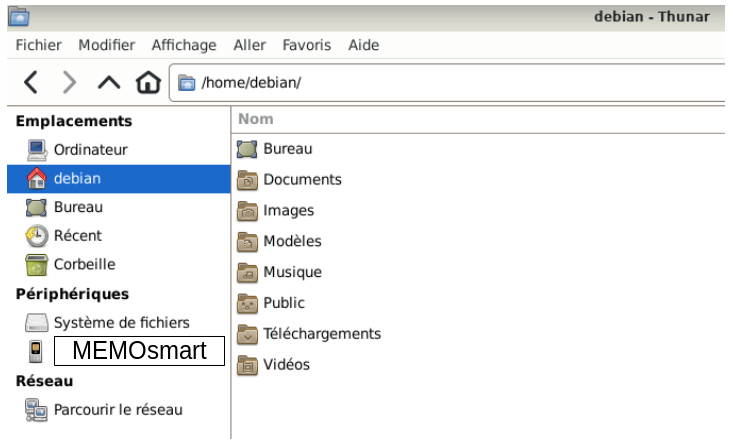
- Simple clic > smartphone « MEMOsmart »
Dans la zone principale apparaît un fichier qui se trouve sur le smartphone.
Dans cet exemple : « Espace de stockage interne partagé »
Il se peut que ce fichier n'apparaisse pas, passer à l'étape suivante.
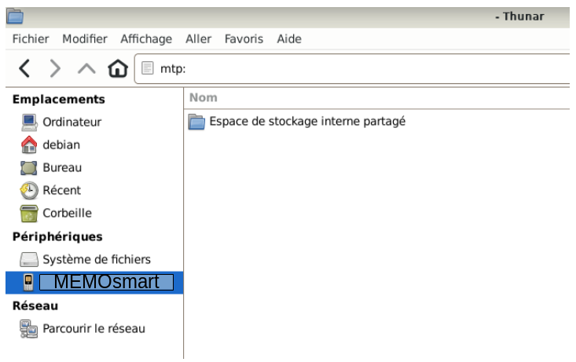
- Double clic > Espace de stockage interne partagé
Il se peut que ce fichier n'apparaisse pas, passer à l'étape suivante.
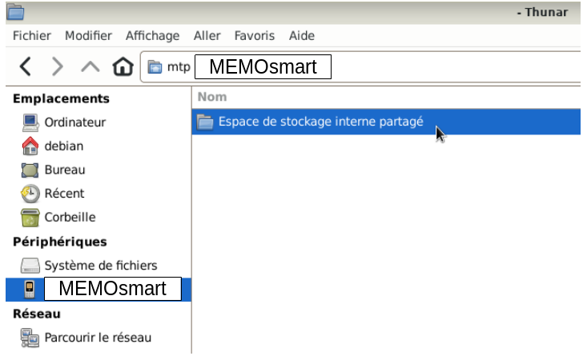
- Dans la zone principale apparaît une liste de dossiers qui se trouvent sur le smartphone.
Le dossier « DCIM » doit apparaître dans cette liste.
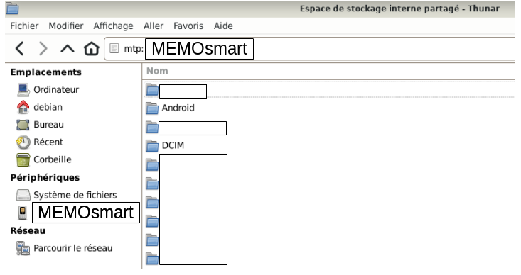
- Double clic > DCIM
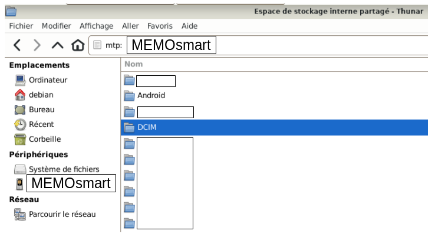
- Le dossier « Camera » doit apparaître.
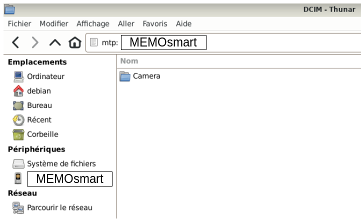
- Double clic > Camera
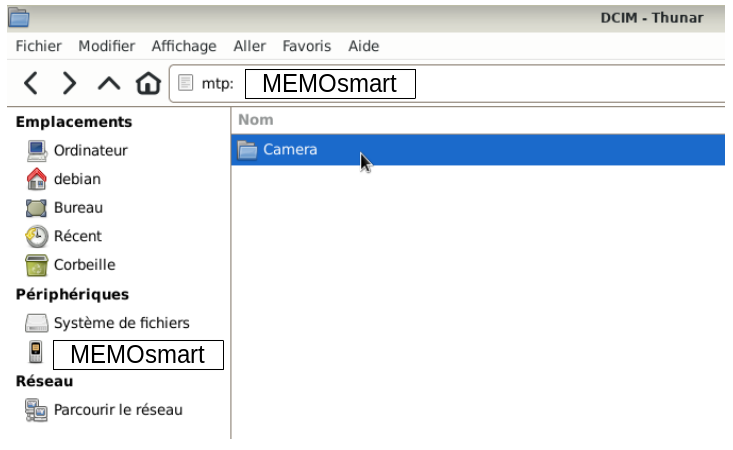
- Dans la zone principale apparaît toutes les photos qui se trouvent sur le smartphone.
Les fichiers des photos sont en général en « .jpg ».
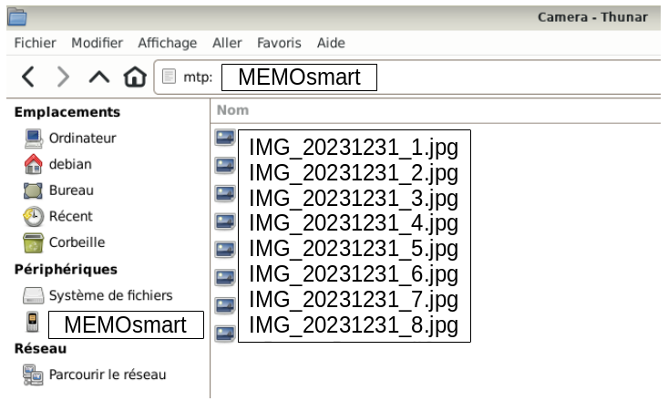
- Dans cet exemple, seule la copie de la première photo sera faite.
Il est possible de faire une sélection multiple.
Clic droit sur le premier fichier (première photo)
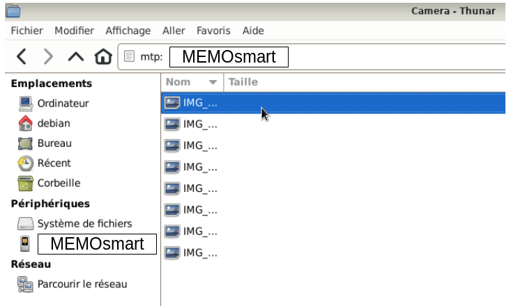
- Une liste déroulante apparaît ; à cette étape il est possible de :
Visualiser la photo : Ouvrir avec le « Visionneur d'images Ristretto ».
Ouvrir avec > une autre application
L'envoyer vers > ...
Couper ou copier le fichier (la photo) vers le disque dur du PC ou un support externe.
Supprimer le fichier (la photo)
Renommer le fichier (la photo)
Propriétés du fichier (de la photo)
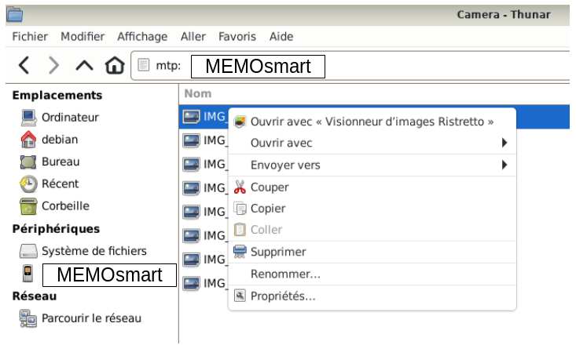
- L'exemple est de copier la première photo du smartphone vers le disque dur du PC
dans le dossier Images
Simple clic > Copier
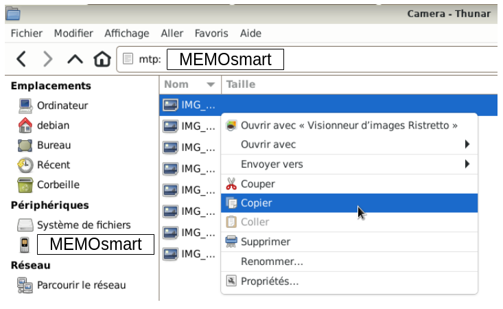
- Simple clic > Debian (nom du simple utilisateur)
Nota : Les images qui suivent sont aussi utilisées sur une autre page de ce site, c'est pour cela que le
smartphone a disparu sous « Périphériques ». Ne pas s'inquiéter, de votre côté, il est toujours visible.
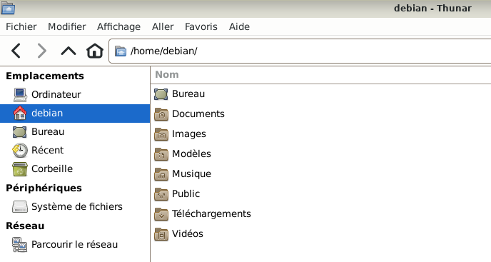
- Double clic > Images
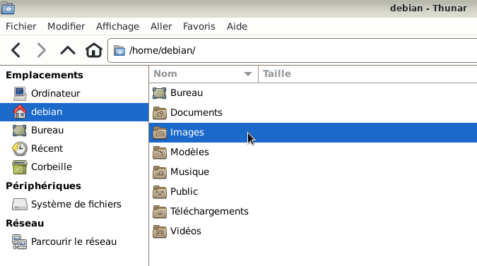
- Positionner le pointeur de la souris dans la zone principale.
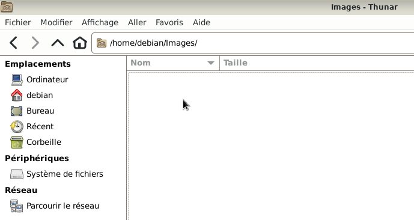
- Clic droit, une liste déroulante apparaît.
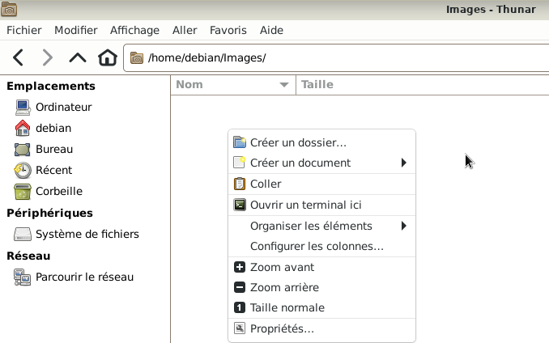
- Simple clic > coller
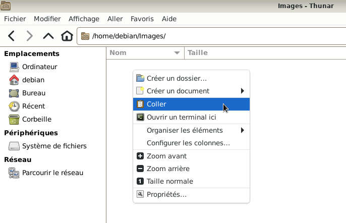
- Le fichier « IMG_20231231_1.jpg » (la première photo), a été copié dans le dossier Images.
Nota : Il est possible de sélectionner plusieurs fichiers (photos) pour les importer.
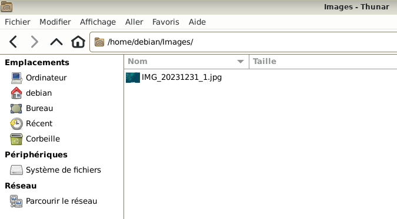
- Si besoin, se rendre au chapitre :
Débrancher le smartphone en toute sécurité
- Fermer le gestionnaire de fichiers : Simple clic > Fichier > Fermer la fenêtre
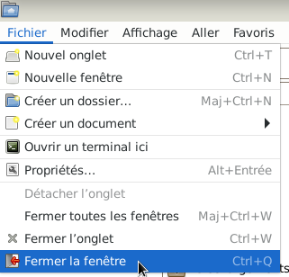

Retour
Informations sur le logiciel libre et
Merci.
Marques déposées :
Ce site ne fait pas partie de Debian, n'est pas produit par le projet
Debian, ni approuvé par le projet Debian.
Ce site n'est pas affilié à Debian. Debian est une marque déposée appartenant
à Software in the Public Interest, Inc.
Contribuer :
Ce site ne fait pas partie de XFCE, n'est pas produit par le projet
XFCE, ni approuvé par le projet XFCE.
Ce site n'est pas affilié à XFCE.
Ce site est juste réalisé par un passionné.